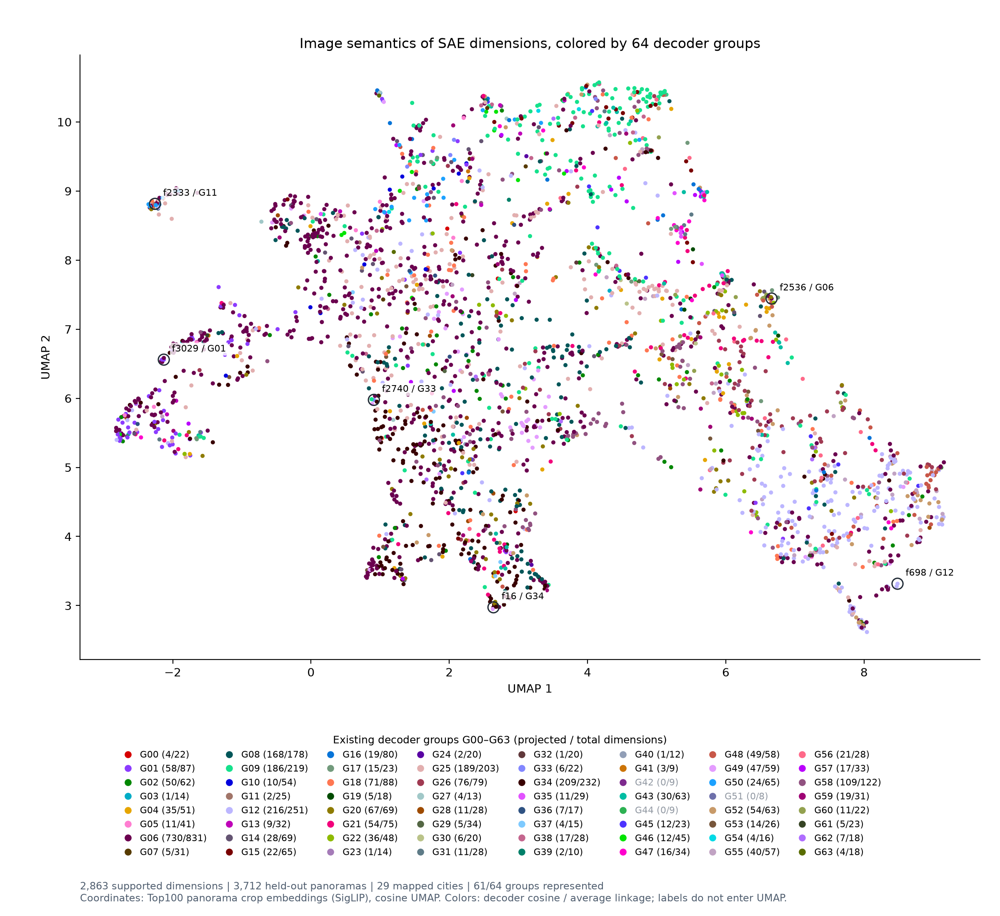
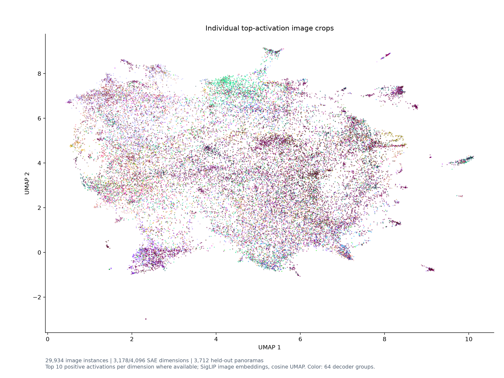
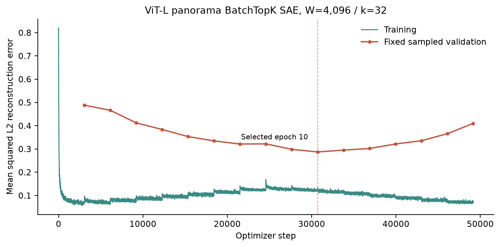
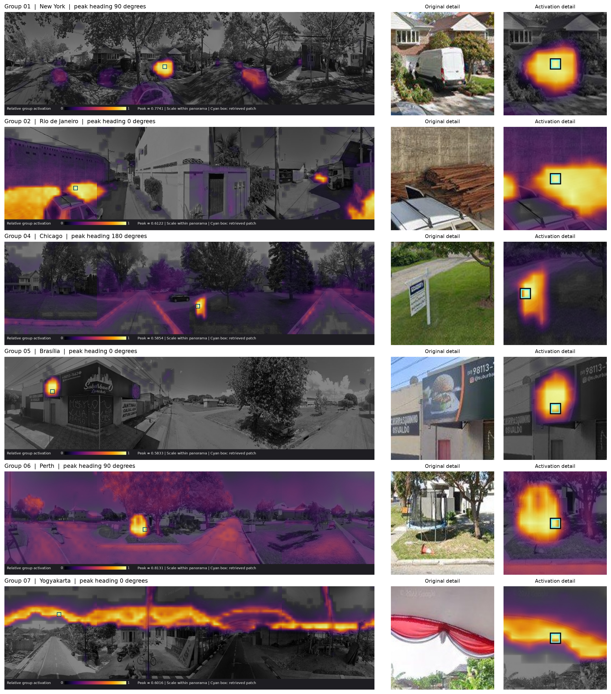
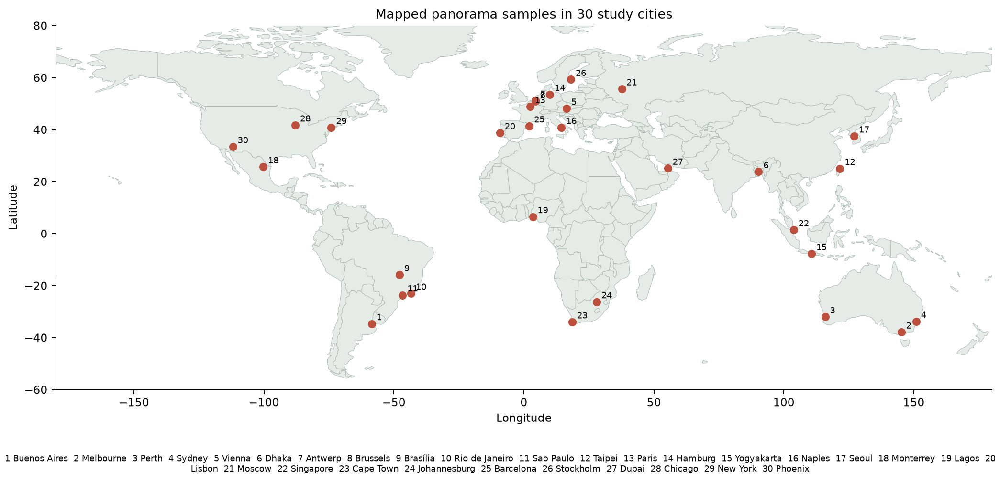
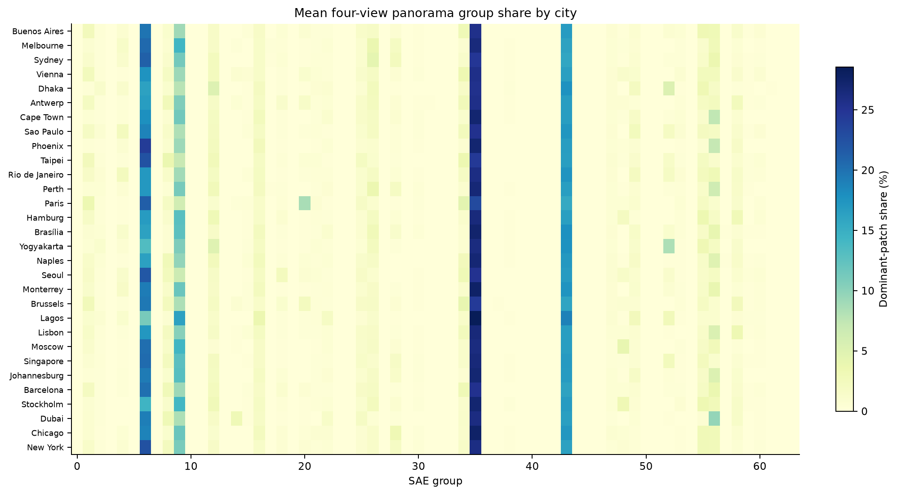

先合并同一对象的部件维度，再比较14×14、21×21、28×28范围的组成与布局。已有局部模板保留为重建参考；新的关系原型尚未训练。
查看第一步要素表、图像证据与小试计划 →Urban Scene Primitives
从街景中学习稀疏视觉单元，观察它们响应什么，以及不同单元如何共同出现。
四方向图像分别经过冻结的 DINOv3 ViT-L/16（448 × 448 → 28 × 28 × 1024），再进行环形全景邻域 context mixing；逐 patch 输入 BatchTopK SAE，完成 1024 → 4096 → 1024 的稀疏分解。
96个局部模板：覆盖目标尚未达到
完整开发集51,020张方向图的平均patch覆盖为47.4%， 达到逐图80%要求的有141张（0.276%）。 冻结模板后，116张图平均覆盖从47.8%升至50.4%，仍为0/116达标。
66个有正响应的模板各展示8个不同点位，共528组原图、贡献热图与裁剪；其余30个槽位在开发集无正响应。
这里按激活重建误差判定覆盖，语义质量待核查；模板数量调参仍为待办。
维度语义地图 ↗
2,863 个维度，各维 Top100 激活区域的 SigLIP embedding 汇总；悬停预览，点击核对原图、激活及四方向全景。

02 / Image evidenceTop10 图像实例 ↗
29,934 个实例单独投影。按维度、64 组和激活排名筛选，查看同一维度响应的不同景观。

03 / Interpretation逐维 Qwen 解释 ↗
每维 Top10 高激活区域裁剪并遮挡背景，查看模型看到的实际拼图、候选含义及局限。
已解释 3,178 维；样本内无正激活 918 维。本轮解释计算已完成，语义名称待核查。
训练与激活
85,191 个训练全景，3,840 个验证全景，每城固定留出 128 点。训练完成 16 轮，最优第 10 轮；sampled validation squared-L2 为 0.287344。K=32 是批次平均的激活预算，每个 patch 的非零数可以不同。




城市与视觉组成
4,096 维 decoder 按余弦距离与 average linkage 归纳为 64 组，用于组成和城市比较；分组颜色与语义地图一致。




展开城市相似性、共现与空间结果


景观组合探索
在同一套 SAE 表征上，查看全景组成的 NMF 候选模板与跨城市共现组合。候选模板的数量由模型容量设定，还不能直接等同于景观类型数量。
查看组合、完整四方向实例与统计结果 →方法与解释范围
语义地图使用图像裁剪的 SigLIP embedding，城市、空间坐标、decoder 分组和 VLM 文字均不参与 UMAP 拟合。维度地图中至少 20 个有效实例才进入投影，故 4,096 个模型维度对应 2,863 个散点；图像实例地图则保留 3,178 维的最多 Top10 实例。64 组使用各自唯一颜色，部分组暂无足够实例进入维度投影。
二维邻近关系供浏览，不证明类别边界或统计显著性。Qwen 名称为待核查的解释；维度可能对应物体、部件、纹理或混合概念。激活图表示 patch 级响应，不是像素分割。